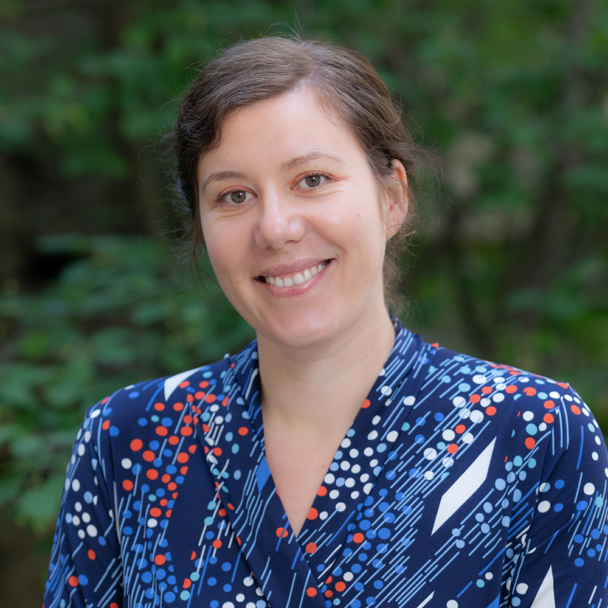

Prof. Dr. Larissa Albantakis
University of Wisconsin, USA
Learning in Brains and Machines
About
Larissa Albantakis, PhD is a computational neuroscientist and Assistant Professor of Computational Psychiatry. Her research explores the relationship between causation, complexity, consciousness, and cognition, and their quantitative assessments in neural network models and neurophysiological data from healthy subjects and clinical patient populations. Dr. Albantakis’ research group is aimed at developing novel computational tools to analyze and model the origins, symptoms, and potential for interventions of mental disorders in a causal, mechanistic manner at the individual and group level.
Dr. Albantakis obtained her Diploma (MSc) in Physics from Ludwig-Maximilians University in Munich in 2007, and her PhD in Computational Neuroscience from Universitat Pompeu Fabra in Barcelona in 2011 under the supervision of Dr. Gustavo Deco. Her PhD research focussed on using large-scale, biophysically-realistic neural models and dynamical systems theory in the context of decision-making. Dr. Albantakis has been at the University of Wisconsin-Madison since 2012, where she worked together with Dr. Giulio Tononi on causal analysis and the integrated information theory (IIT) of consciousness before starting her own research group in 2022.